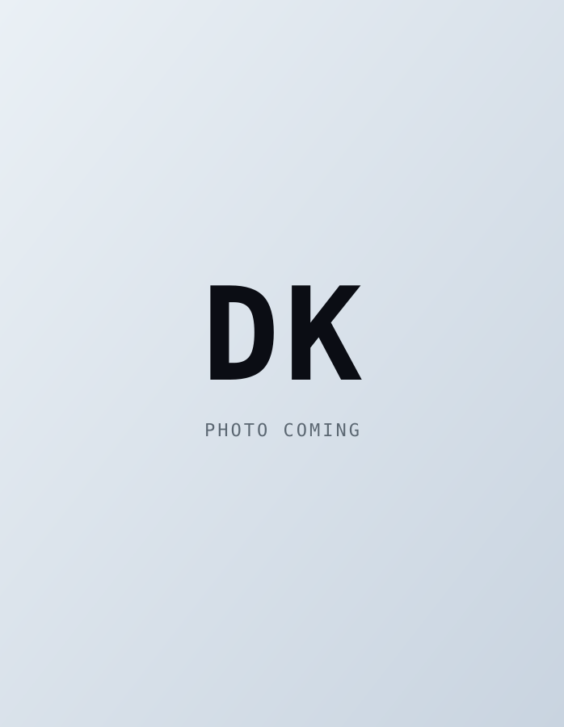

Дарья Королёва
Бизнес-аналитик в команде «Риски Технологий» Управления операционных рисков Сбера: работаю с технологическими и операционными инцидентами, формирую бизнес-требования к системам и помогаю выстраивать методологическую базу нового вида риска — «Риск изменений».
До Сбера два года занималась проектными и операционными рисками в ГТЛК и Банке ДОМ.РФ — от ведения реестров рисков и оценки кредитного риска до утверждения BIA и расследований инцидентов непрерывности деятельности. Раньше — стажировки в Milestone Capital (private equity) и СОГАЗ.
Магистратура НИУ ВШЭ по управлению цифровым продуктом (бизнес-информатика, 2025) и бакалавриат Финансового университета по управлению финансовыми рисками и страхованию (экономика, 2023).
Помимо работы — большой теннис на призовом уровне (международные и российские турниры), академический вокал, горные лыжи, классическая литература и бег.